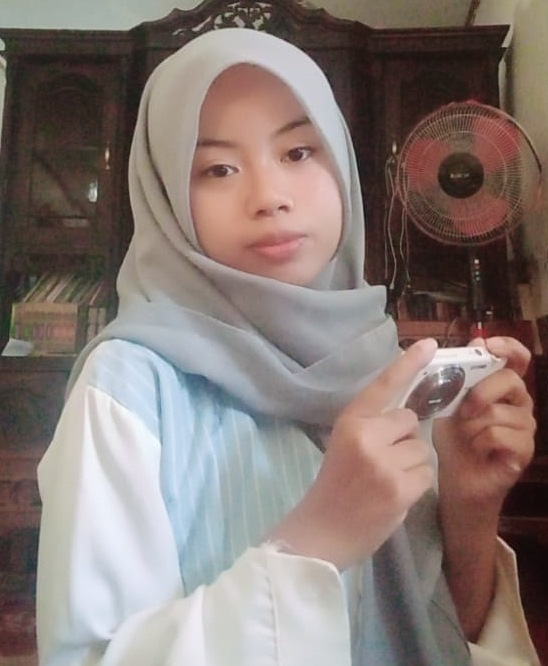

Personal Portfolio & Creative Journal ✦
A little sky, a thousand possibilities.
Hi, aku Sayidatul Ghoni. Aku membuat website yang menyimpan cerita, kenangan, dan ide.
Explore My WorldView My WorksPersonal Portfolio & Creative Journal ✦
Hi, aku Sayidatul Ghoni. Aku membuat website yang menyimpan cerita, kenangan, dan ide.
Explore My WorldView My Works
Aku mahasiswa Sistem Informasi yang tertarik pada web development, desain, dan proyek kreatif. Bagiku, website bukan hanya tampilan, tetapi cara untuk menyimpan kenangan, menyampaikan perasaan, dan menghubungkan orang dengan cerita.
Melalui Little Sky Studio, aku ingin menunjukkan bahwa teknologi bisa terasa hangat, personal, dan penuh imajinasi.
Di sini aku menyimpan proses di balik proyekku: moodboard, screenshot desain, foto, kutipan favorit, dan catatan kecil tentang apa yang aku pelajari.
Karena bagi aku, setiap website dimulai dari sebuah cerita.
Website yang aku buat untuk menyimpan kenangan, mengumpulkan pesan, dan mengubah cerita menjadi pengalaman digital.
Potongan dunia yang aku abadikan: langit, bunga, bangunan, dan hal-hal kecil lainnya.
Tertarik berkolaborasi, berdiskusi tentang web development, atau sekadar melihat proyek-proyekku?
 my world
my world ideas
ideas moment
moment